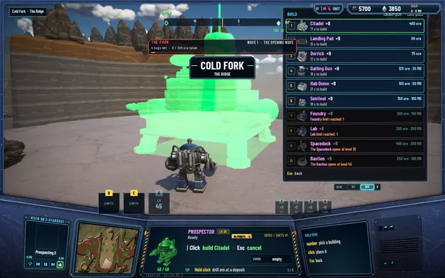
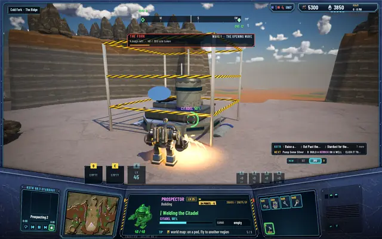
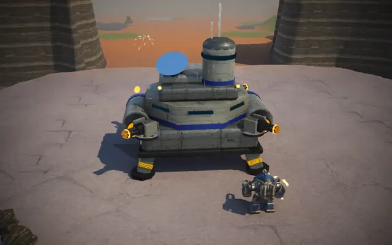
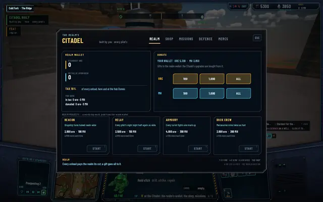

A Citadel in every region
Until today a realm had one Citadel, wherever its first pilot had put it, and every unload, respawn and respec led back there. Now every region may have one. Milestone 10's first merge is a small rule change with a long reach: the realm's home is wherever its pilots build it.
The rule
The limit on Citadels counts a region now, the way the Landing Pad's already did, so a second one in the same region is refused with "This region has its Citadel: one a region", and one in the neighbouring region stands. It is built like the first, from a blueprint sold at any Citadel's shop, dearer each copy, for 400 ore and 71 seconds of welding. Frontier pilots, the server-run company in every world, never build one; that stays a human's choice.
Every Citadel is a full home. A Prospector unloads at any of them, and the realm takes its tax at each. One that falls comes back at the nearest Citadel or Hab Dome. The respec is made at any. H at any of them opens the Citadel screen on the realm's one wallet, with the shop, the missions, the defence, the mercenaries and the realm projects, and a mercenary hired at a Citadel works the field nearest that one. Each has its four corner turrets, firing with the realm's marks. The goals that send a pilot to a Citadel now point at the one in its region, or the realm's first if its region has none.
Why it matters
The worlds are big and a region a few minutes' walk. With one home, a realm that spread into the level-2 regions carried every load back across a passage, and a pilot who fell three regions out walked back from the start. With a Citadel in each region a realm can settle, and the realm wallet, fed by every unload at every one of them, pays for the projects that reach the whole realm. It also sets up the next tasks of the milestone, where more than one human shares a world.
The pictures are from a hidden run: the blueprint placed in Cold Fork, the build rising inside its tape, the finished Citadel on its mesa, and the Citadel screen opened there. The three test suites pass at 505, 92 and 321.

The blueprint placed in Cold Fork: 400 ore, 71 seconds to build.
Welding the Citadel, half way.
Finished, with its corner guns, the valley floor below.
H at the new Citadel: the same realm wallet, projects and shop as at the first.